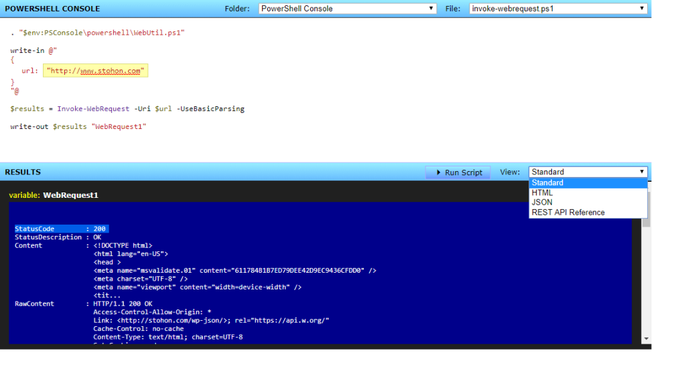
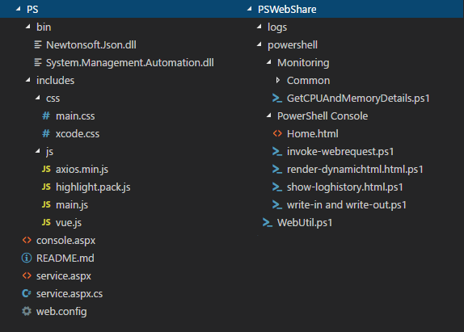
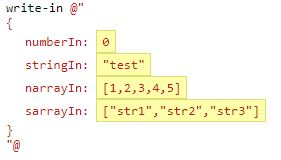

PSWeb is a single page web application that lets users select PowerShell scripts to view and execute from a remote server. The user can only modify parameters of the script (highlighted yellow) and then view the result in standard PowerShell format, HTML or JSON.
The PSWeb application code can be found on github at: https://github.com/stohon/PSWeb
The application also works with the github repository: https://github.com/stohon/PSWebShare. PSWebShare is a collection of PowerShell scripts and example files that demonstrate how to use PSWeb.
The remainder of this blog will be to explain the project files, high level application flow and setup.
PSWeb and PSWebShare project files are shown below. The PSWeb project contains all the required files to run the application in an IIS web site. The PSWebShare project are powershell files that the PSWeb application will use as content.

PSWeb includes highlight.js for code highlighting in the browser (css/xcode.css and js/highlight.pack.js) this project can be found on github. It also includes vue.js and axious.min.js. Vue.js is a rendering engine in javascript and axios.min.js is a javascript ajax library.
The core project files are: css/main.css, js/main.js, console.aspx, service.aspx.cs and web.config.
Console.aspx is the home page of the application and contains teh HTML markup for the site. Service.aspx.cs is C# server side code that acts as a service for the application. Main.js is the javascript writting for vue.js that populates and renders data within the console.aspx page.
PSWebShare contains two directories, logs and PowerShell. The logs directory is an empty directory that will be used to output log files that are generated after each script execution. The PowerShell directory is where you will store all of your custom PowerShell scripts. The application will scan this directory for all sub directories allowing and display files that are included in these directories only. All other files that are not in a root level sub directory will not be visible in the console.
When the console.aspx page loads it calls the service.aspx page to request the PowerShell folders and folder files as a JSON response. It then populates the menu item drop downs. The drop downs will default to the “PowerShell Console” folder and the “Home.html” file. Each time the folder is changed within the drop down the file will also default to “Home.html” if it exists within that folder. The Home.html page allows you to create a landing page for each folder to provide details regarding the scripts within the folder. If Home.html does not exist it will load the first script in the list.
Once the user selects a script they can then update parameters of that script. Below is an example of parameters for the “write-in write-out.ps1” example script included in PSWebShare.

Notice the values are highlighted yellow, indicating that the values can be changed. The value can be updated with any valid JSON markup. When the user clicks Execute the JSON will be sent to the service.aspx to be added as a variable to the PowerShell script to be executed.
The PowerShell script interprets the JSON via the file WebUtil.ps1 and function write-in within the PSWebShare project. WebUtil.ps1 also contains the write-out functions that are required to pass data back to the console application.
In the above example an environment variable is used to point to the location of PSWebShare. This is not necessary and could contain a hard coded path. The environment variable was used to provide a way to setup the application on different environments without having to rewrite all the PowerShell scripts that contained hard coded reference paths.
Once PowerShell write-in function is called with the JSON parameters it converts each root level property into a PowerShell variable using the ConvertFrom-Json function. The value is then assigned to a variable as $variablename so it can be used within the script as a traditional variable reference.
To output data from a script to the console you must use the write-out functions. Write-out accepts the variable to output and an optional name for the variable. The name is used as a reference to the object on the client. The write-out function packages the object data into a new object called OutputToWeb which is defined in WebUtil.ps1. Only values outputted through OutputToWeb will be processed within the console application.
After the script completes, all resulting OutputToWeb objects are returned to the console application to be displayed in the results window. The results can be display as standard PowerShell output display, HTML or JSON.